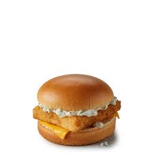

Fish-O-Fish
Home

Description
The Filet-O-Fish is a fish sandwich sold by international fast food restaurant chain McDonald's. It consists of a breaded fish fillet, tartar sauce, and a slice of cheese, served on a steamed bun.
Ingredients
- 1 breaded fish fillet (e.g., Alaskan Pollock)
- 1 slice of cheese (e.g., American cheese)
- Tartar sauce
- 1 steamed bun
- Lettuce (optional)
Steps
- Prepare the fish fillet by breading it with a mixture of flour, breadcrumbs, and seasonings.
- Fry or bake the breaded fish fillet until golden brown and cooked through.
- Steam the bun until soft and warm.
- Spread tartar sauce on the bottom half of the steamed bun.
- Place the cooked fish fillet on top of the tartar sauce.
- Add a slice of cheese on top of the fish fillet.
- If desired, add lettuce for extra crunch.
- Cover with the top half of the steamed bun.
- Serve and enjoy your homemade Filet-O-Fish!